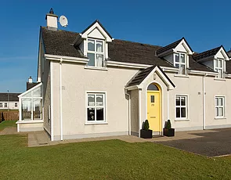
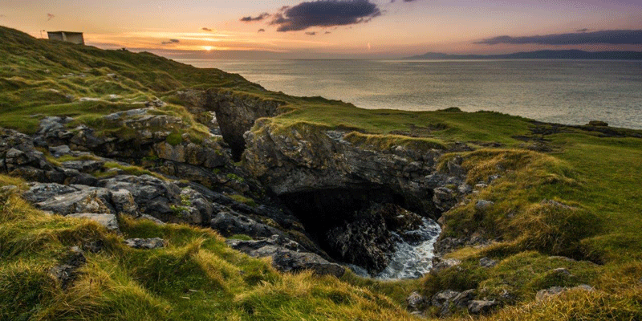
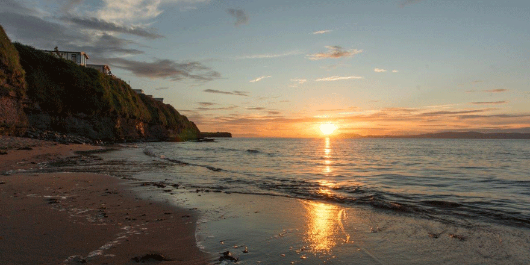

ACCOMODATION: Our 4 star houses have recently been refurbished to a high standard and we have a range of options including 2, 3 & 4 bedroom houses available.
VISTAS: The Wild Atlantic Way and Donegals' most stunning beaches and scenery are on the doorstep of Surfers Cove. A short walk takes you to the blue flagged Tullan Strand.
SURFS UP! If you are keen to do a beginners surfing course or take on the world class reef break, there are several options available, just ask!
BEST PLACE ON EARTH? Donegal was voted by the National Geographic as the "coolest place on the planet" in 2017. What are you waiting for?